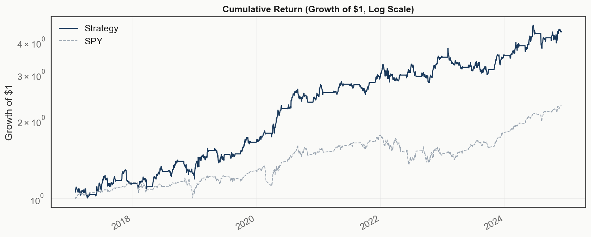
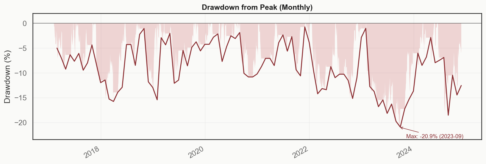

Systematic Equity Research
Gradient-boosted cross-sectional ranking, Ledoit-Wolf covariance shrinkage, volatility targeting, and convex portfolio optimization under dollar- and beta-neutral constraints. Backtested 2010–2024 with walk-forward training, purged cross-validation, and transaction costs included.
CAGR
35.3%
Sharpe
1.46
95% CI [0.90, 2.07]
Sortino
2.35
Calmar
1.43
Max Drawdown
−24.7%
Volatility (ann.)
22.4%
Beta vs SPY
0.14
Avg Turnover
120.7%
monthly
2010–2024 · monthly rebalance · vol targeting + drawdown governor · dollar-neutral. Sharpe CI via block bootstrap (10,000 samples). Returns net of 1 bp commission + 5 bp slippage on turnover.


Drawdown chart is monthly underwater (% from peak). Max drawdown reflects fully invested exposure through all regimes with no regime filter.
| Factor | Mean IC | IC IR | % Positive Days |
|---|
Rank IC of each factor vs. 21-day forward returns, full sample. Blue = positive mean IC, red = negative. Bar width scaled to the largest-magnitude factor (reversal).
Average LightGBM split importance per factor, across all monthly retrain windows.